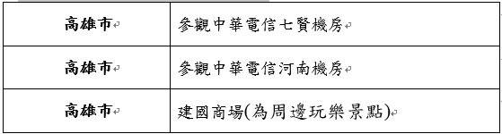
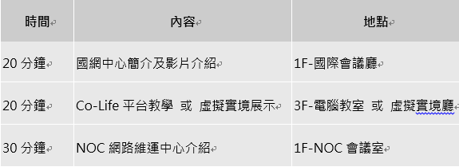
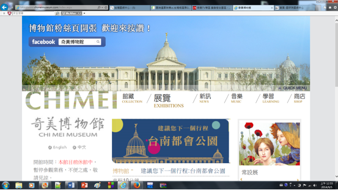
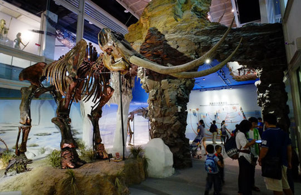
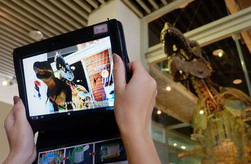

在這產業快速變遷及資訊爆炸的年代，網路的傳輸是其中的重量級角色， 因此，希望透過此實地參觀而能更進一步了解網路通訊傳輸的運作模式， 並比較課本與實際運作中的機房，而更加深對其運轉方式的理解。
活動地點中華電信電信交換機房、MOD機房、建國商場(為周邊玩樂景點)。
活動內容(1)了解中華電信線路交換機制。 (2)了解中華電信MOD維運機制。
網址: http://www.nchc.org.tw/tw/ 須於預訂參觀日「1個月前」線上預約系統 人數:限10至80人 開放時段:為每星期三上午10:00~12:00及下午時段 14:00~16:00。 台南分部－聯絡窗口：卓先生 (c00cck00@nchc.narl.org.tw) ‧聯絡電話：06-5050940-760 ‧交通資訊：http://www.nchc.org.tw/tw/about/traffic/southern_office.php ‧參訪流程：
網址: http://www.chimeimuseum.com/index.aspx 新館預計2015年初開館。
網址: http://www.tvsm.com.tw/wSite/mp?mp=LifeS 園區地圖: http://www.treevalley.org/place_all.php 開放時間：每週二至週日，上午九時至下午五時。 全球第一座液晶電視專區『樹谷園區』（Tree Valley Park） 樹谷園區，原名為液晶電視專區，位於台南科學園區的西側，為南科特定區計畫範圍，由奇美集團取得開發權 奇美將此園區打造為生態與科技結合且共生的園區，樹谷園區總面積247公頃， 根據規劃，僅有150公頃為企業用地，其餘將規劃為綠地、大型公園、考古博物館，還有50公頃的生態景觀滯洪池。
 館內可以借 ipad 來導覽，ipad 不是只能語音或資訊導覽， 你還能將她對準恐龍，然後內建程式就會將活生生的恐龍以 3D 方式呈現在 ipad 螢幕上。 因為在南科當地曾經發掘出有史前人類遺跡(西拉雅)，所以也闢了一區做特展。 導覽人員會介紹不同的殉葬方式以及如何辨別骨骼性別等等。